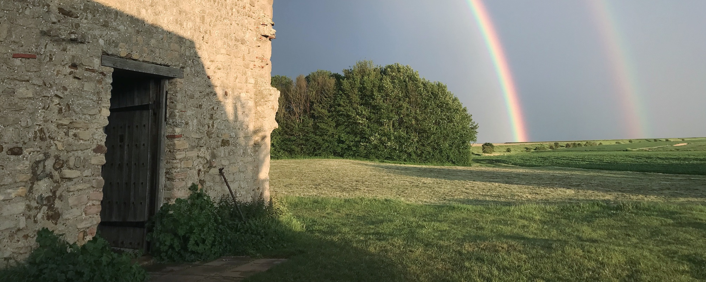
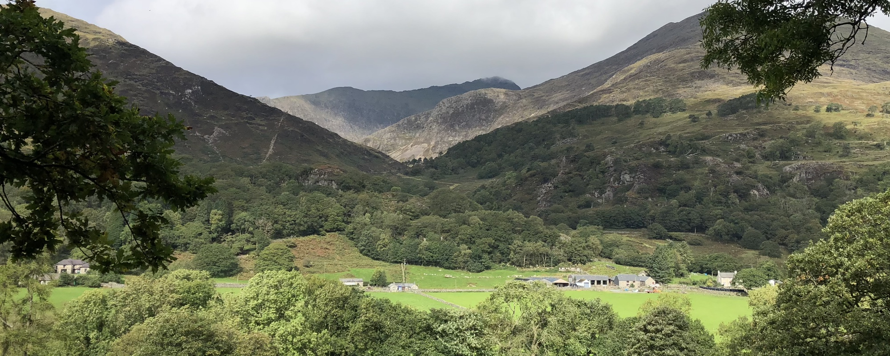
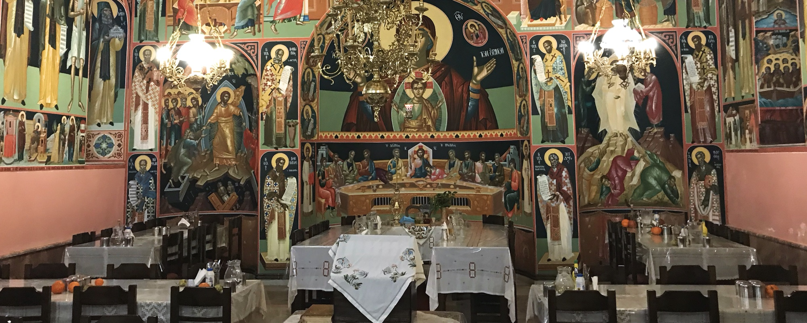
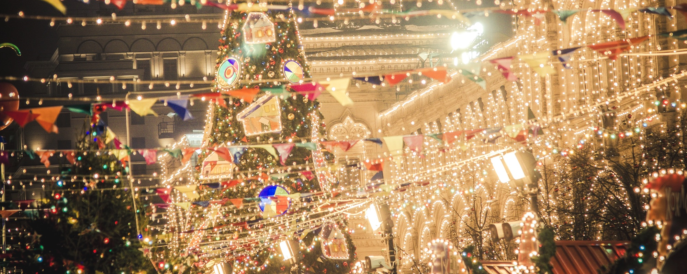

Greetings in Christ!
We are a group of young adult Orthodox Christians (generally 18-35+) who meet throughout the year for prayer, fellowship and other fun events in order to better know our faith, share adventures and spend time in friendly company. We organise several events throughout the year around the UK. You can always find the latest information about our activities on Facebook and follow us there or on Instagram to stay up to date. If you think we should be on any other platforms, please let us know!
What we do
If you are interested in listening to some of the
talks from past events, you can find them on our
YouTube channel. Please consider subscribing! Events are organised by the OFSJB Youth
Committee, who are part of the
Orthodox Fellowship of St John the Baptist
and you can find more about us
here.
If you would like to support our work,
please consider becoming a member of the fellowship,
giving a small
donation
or contact us if you would like to help out with and
organise events in your area, perhaps! We are happy to
work with and support all Orthodox youth in the UK across archdioceses
and traditions and bring them together.

Youth Festival
The main event of the year, which usually takes place on one of the May Bank Holiday weekends out in the countryside. The Festival is 3-4 days full of interesting talks by a variety of speakers (bishops, priests, monks, nuns and accasionally academics and laity as well) based around a common theme. Some of the other activities you can expect include walks, bonfire nights, sports, games and more (and you are free to skip the ones not appealing to you)! There is also plenty of "unorganised" time for personal conversations both with the speakers and with other attendees.

Snowdonia Weekend
Following quick on the heels of summer's end, we go for a hike in the beautiful peaks of Snowdonia and stay overnight in a cozy little cottage. It is a great opprotunity to get some exercise and breathe in some fine clean moutain air. Spaces are limited for this event because of the sleeping arrangements, so watch for the announcement if you are keen to go.

Octofest
Originally conceived as the annual catch-up meeting after that year's festival, Octofest has since evolved into a proper event of its own. Everyone is welcome, whether they attended the festival or not. Often, around half of the people who come hadn't attented the festival, so no need to fear you'll be a lone outsider! We want everyone to feel at home with us. Commonly we start with a celebration of the Divine Liturgy or another Church service, followed by a talk by the local priest and some food, music and games.

Christmas Fellowship
To stave off the winter blues, we head out together and visit the Christmas markets in London to enjoy some ice-skating and a warm hearty meal (also possibly some mulled wine). Join us to fill the cold days with the warmth of friendship, joy and have fun with fellow Orthodox youth.
Latest from our Instagram
Privacy
This site complies with current laws concerning personal data, we do not
store any of your details.